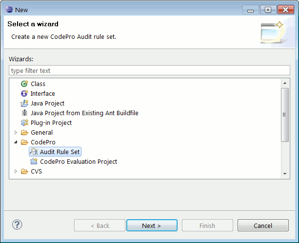
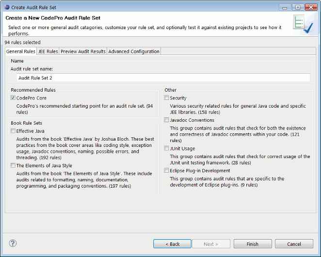
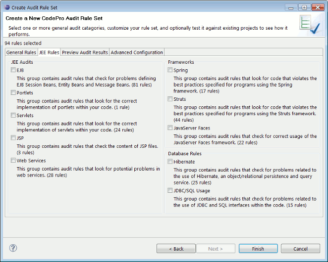
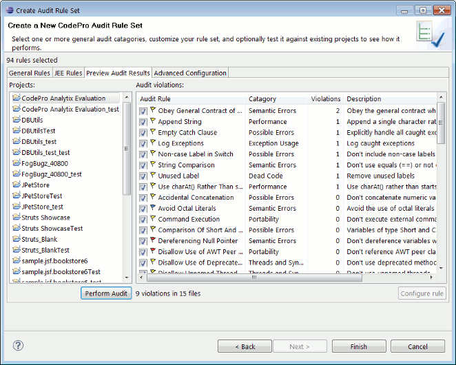
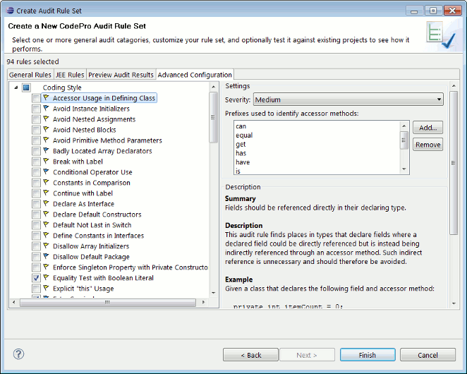

Audit Rule Set WizardThe Audit Rule Set Wizard allows you to create new audit rule sets. It can be reached from the CodePro > Audit preferences page or from the File > New > Other... menu item. 
General RulesThe General Rules tab allows you to name the new rule set. You can also select from a group of pre-defined audit rule sets. Once you have a new, unique name for the audit rule set, you can either finish the wizard immediately or continue on to the next tab.
JEE RulesThe JEE Rules tab allows you to select from various pre-defined JEE related audit rule sets.
Preview Audit ResultsThe Preview Audit Results tab allows you to test your new audit rule set against existing projects in your workspace. You can view the audit results and decide which rules actually make sense to run against your existing codebase. In order to preview the audit results, select one or more projects from the table on the left and choose the Perform Audit button. The audit will run, and the audit results will be displayed in the table on the right. The audit results will be sorted by the number of violations per rule. To disable an audit rule de-select the checkbox next to it. To configure an audit rule, double click on it.
Advanced ConfigurationThe Advanced Configuration tab allows you to custom configure your audit rule set. You can enable or disable individual rules, and custom configure rules as appropriate to your development environment. |